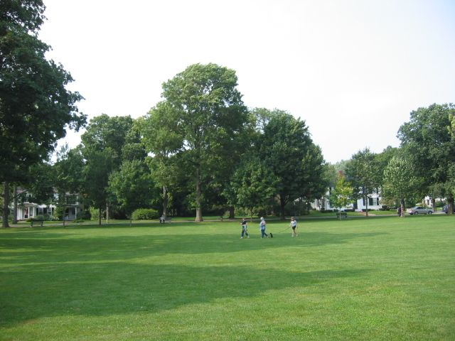
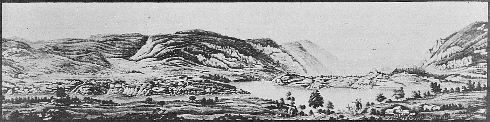
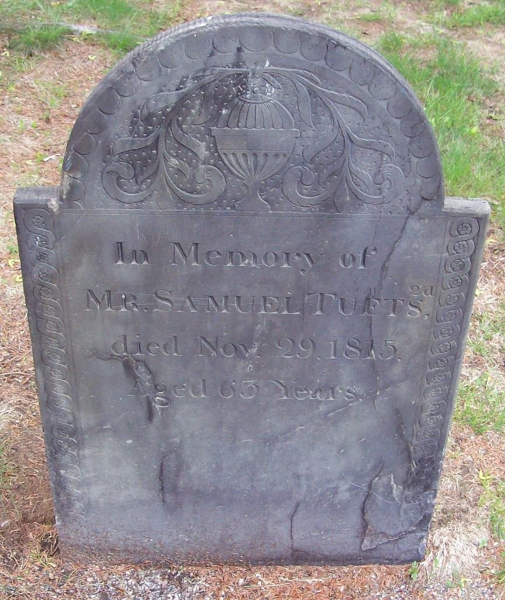

Biography
Samuel Tufts 2nd answered the Lexington Alarm, went to Canada in 1776, and served at West Point in 1780.
Service Record
Town: Medford · Dates: 1752 – 1815
Born 19 Aug. 1752 in Medford; died 29 Nov. 1815. (Tufts Kinsmen, Vol. I, p. 160, family no. 41-2)
Answered the Lexington Alarm; private, going to Canada in 1776 and to West Point, N.Y., in 1780; head of household in Medford 1790 and 1810. (Tufts Kinsmen, Vol. I, p. 160, family no. 41-2)
Family Connection
Family number 41-2 in Tufts Kinsmen, Vol. I. Parents are not named in the extract seen.
Relatives with profiles on this site: father Lieut. William Tufts (1713–1783); brother William Jr. (1736–1782; mother Catherine Wyman); brother George (1747–1796; mother Catherine Wyman); brother Grimes (1748–1808; mother Catherine Wyman); brother David (1763–1823; mother Mary Francis); brother Moses (possible; Brooks no. 266a); sister Lucy Tufts Pritchard; brother Richard Tufts. Brothers are listed with their mothers as Brooks gives them (p. 550); sons of different mothers are half-brothers.
Spouse(s)
- Margaret Hodgkins of Ipswich (d. 1793). Married before 1779 (Wild, p. 53).
“255-267 Samuel Tufts m. Margaret Hodgkins , who d. Aug. 7, 1793. He d. Nov. 29, 1815”
Charles Brooks, History of the Town of Medford (1855), Register of Families, p. 551. Page scan · Text (Perseus)
Authoritative IDs / Index Numbers
| Source | ID / status |
|---|---|
| Perseus person index (auth=) | auth=tufts,samuel. This is a name-level key shared by every Samuel Tufts in Perseus, not a personal ID. Use it with the passages cited on this page. |
| Find a Grave memorial | 26920720 (dates and family checked) |
| Brooks, History of Medford (1855) register no. | No. 261 / 255-267, p. 550–551 |
| Tufts Kinsmen, Vol. I family no. | 41-2 |
| Mass. Soldiers and Sailors | Not yet checked for this page |
| DAR ancestor no. | Note: Pending further work. |
| FamilySearch ID | Note: Pending further work. |
| Geni profile | Note: Pending further work. |
| WikiTree ID | Note: Pending further work. |
| Town / vital records | Brooks’s register (above) is drawn from Medford town and church records; printed VR volume and page not yet checked |
Only IDs confirmed against dates and family are given as matches. “Not yet checked” means the source has not been searched; “Checked, not found” means it was searched without a match.
⚑ Unverified
Possible match to Wild’s Samuel 3d (born 1752, died Nov. 20, 1815, p. 52). The death day differs (20 vs. 29 Nov.). See Samuel Tufts (several men). No other source on this site has yet been checked for this man.
Pictures


.jpg){kind=link}



Find a Grave
Find a Grave memorial 26920720. As given there (secondary; not checked against original records): “Samuel Tufts 2nd.” Born 19 Aug 1752, Medford; died 29 Nov 1815, aged 63. Salem Street Burying Ground, plot 239. Son of Lieut. William Tufts.


Business
A man of this name appears in Brooks’s History of Medford in connection with the brickyards. Whether it is this man is Unverified. See Businesses.
From Cutter’s Memoirs (1910)
“Samuel, born August 19, 1752.”
Cutter, Genealogical and Personal Memoirs, vol. II, p. 1199. Page (Internet Archive)
Cutter lists him as a son of William Tufts by his second wife, Mary Francis. The birth date agrees with the one above.
Cutter’s Tufts sketch (vol. II, pp. 1198–1200) is a compiled family history of 1910, written for a descendant’s line. Quotes are from the Internet Archive’s scanned text, checked against the printed page numbers.
Source added: William Richard Cutter, ed., Genealogical and Personal Memoirs Relating to the Families of the State of Massachusetts (New York: Lewis Historical Publishing Co., 1910).